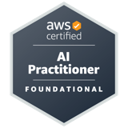

Arizona State University
Expected May 2027Master of Science in Computer Science · Tempe, AZ
- Coursework: Cloud Computing, Data-Intensive Systems for Machine Learning, Data Mining
saisrivathsan2004@gmail.com · LinkedIn · GitHub · Tempe, AZ
Computer Science graduate student specializing in deep learning, computer vision, multimodal AI and LLM systems. Experienced in Python, C++, PyTorch, FastAPI, distributed training, on-premises inference, AWS and MLOps, implementing research models and building end-to-end AI pipelines.
Master of Science in Computer Science · Tempe, AZ
Bachelor of Science in Computer Science · Tempe, AZ
Python, PyTorch, timm, TorchVision
Python, FastAPI, Qwen3-VL, Pillow
Amazon Bedrock, AgentCore, Strands Agents, Aurora PostgreSQL, Next.js
Swift, Firebase, REST APIs, OpenAI API

Production ML pipelines, monitoring and model operationalization